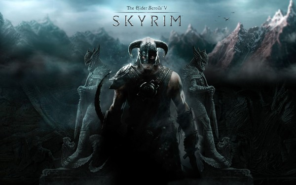

A série The Elder Scrolls é um dos RPGs mais aclamados da indústria dos jogos eletrônicos.
Skyrim é o quinto jogo da sequência e tem acumulado milhões de fãs desde o seu lançamento, em novembro de 2011.
Desde então TES V: Skyrim vem recebendo milhares de mods (modificações feitas por fãs) que tem ajudado
o jogo a envelhecer muito bem, além de contribuir para ampliar ainda mais a experiência de estar nas terras gélidas de Skyrim.
